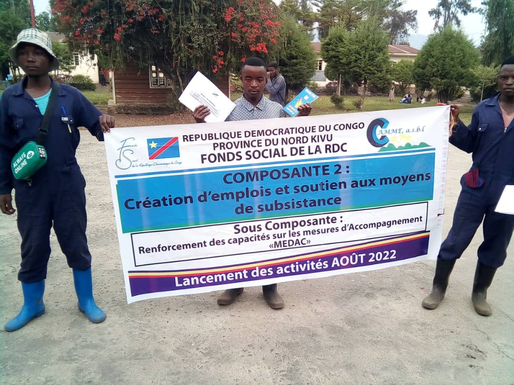
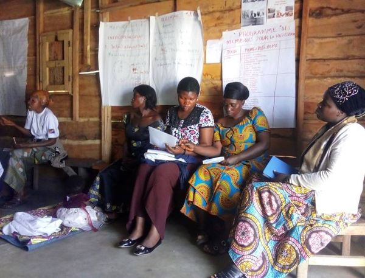
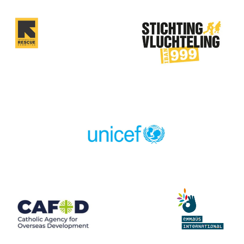
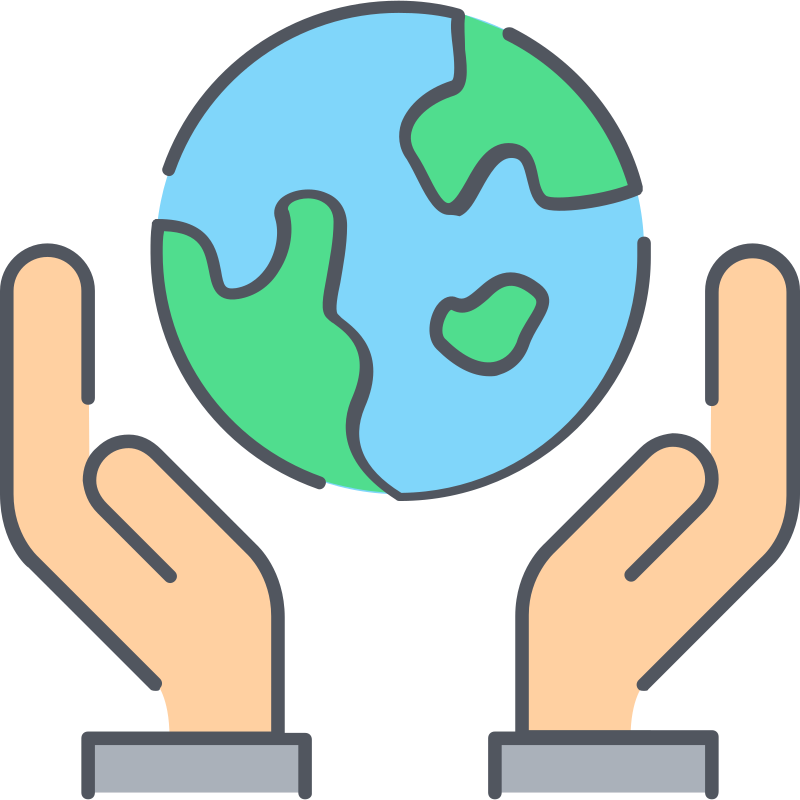
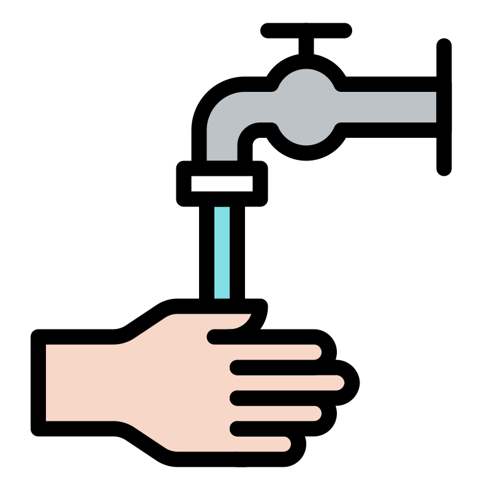

Renforcement des capacités
Renforcement en capacités des mesures d’accompagnement (MEDAC) à 500 bénéficiaires THIMO en MEDAC/FSRDC, Lot2 Quartiers KAHEMBE et MAPENDO sous le thème: "Création d’emplois et soutien aux moyens de subsistance » organisé par CAMME, asbl avec l’appui financier du Fonds Social de la RDC du 5 au 11 Aout 2022.
Promotion du Genre
La sensibilisation de leaders communautaires sur le rôle de la femme dans le développement des ménages. Les femmes qui font la Formation en coupe et couture accompagnées par CAMME asbl dans la Zone de santé de KIROTSHE et le tissage des paniers à SHASHA ET KARUBA. A l’aide de cette formation, ces femmes parviennent à se prendre en charge en offrant des services à la communauté et ainsi, elles se sentent utiles dans la société.
Devenez membre de CAMME asbl
CAMME asbl recrute des membres pour rejoindre son équipe et contribuer à son travail. Les membres de CAMME asbl sont des professionnels qui s'engagent à améliorer la vie des gens en République démocratique du Congo.
- Pour être membre de CAMME asbl, vous devez :
- En devenant membre de CAMME asbl, vous aurez l'opportunité de :
Partenaires
Ce que nous faisons
- Nous intervenons dans les domaines ci-après:



Qui sommes-nous?
Camme une association sans but lucratif qui a pour objectif de promouvoir le mieux-être de la personne humaine dans toute sa dimension . Après plus de 2 décennies des conflits et des guerres fratricides qui ont caractérisées depuis 1993 la République Démocratique du Congo, ce dernier vient d’enter dans une période post conflit. Mais hélas, la destruction et/ou la paralysie du tissu économique de base (L’agriculture ; l’élevage et les services de base…) pendant ces conflits et guerres a plongé la population dans une paupérisation généralisée. La majorité de la population surtout rurale qui souffre des conséquences néfastes, des déplacements successives causés par ces conflits. Il s’avère impérieux d’aider cette communauté affectée progressivement dans ces localités à reconstruire leur vie en luttant contre la pauvreté et l’intégrer dans un plan de développement durable. D’où, l’idée de la création de CAMME l’asbl ce 02 janvier 2011.